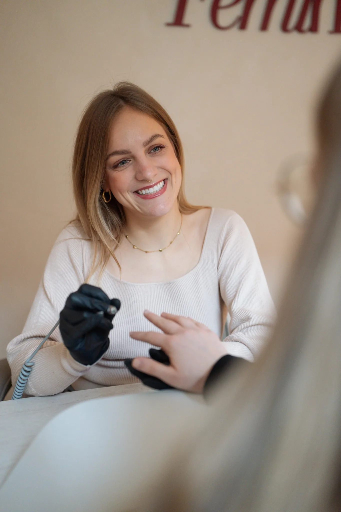
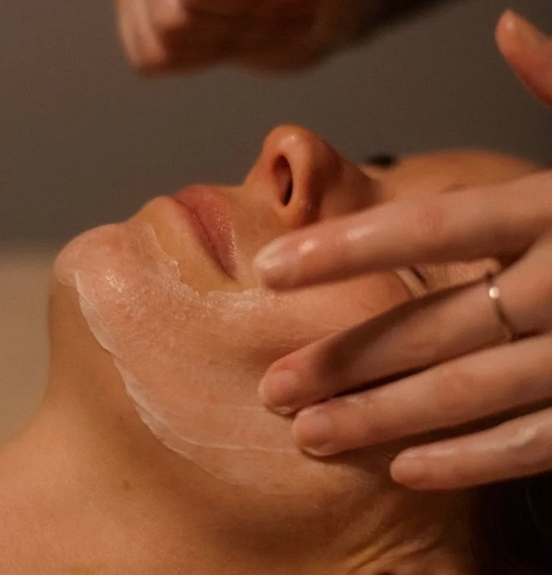
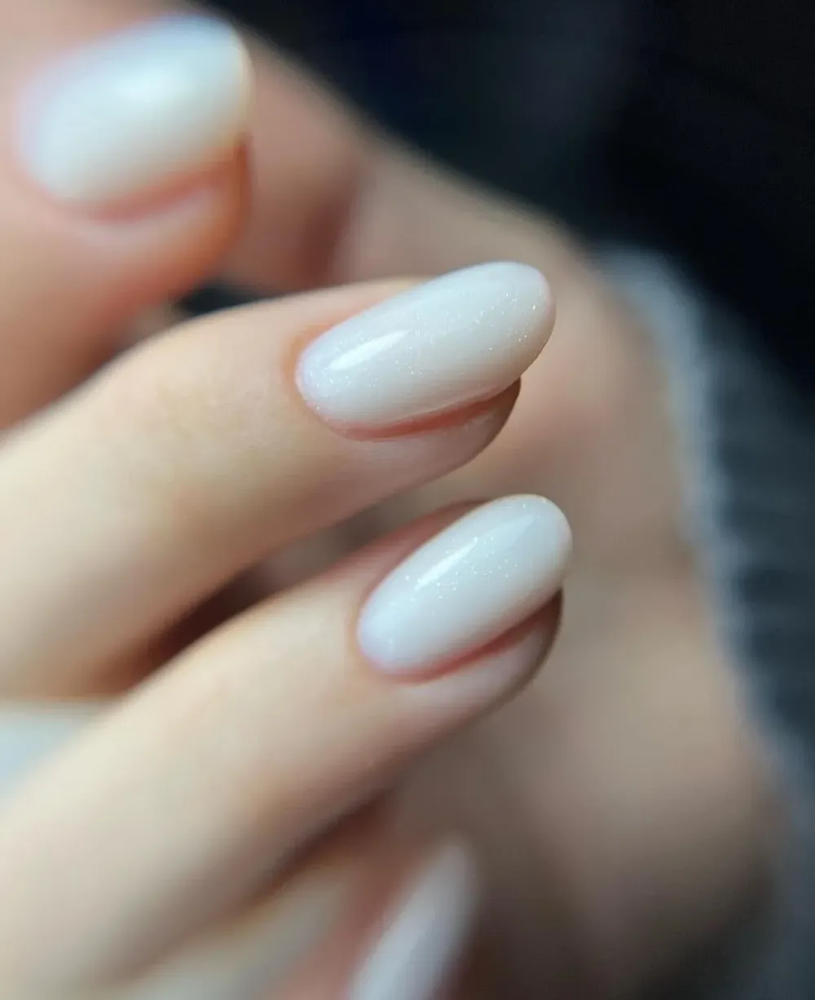
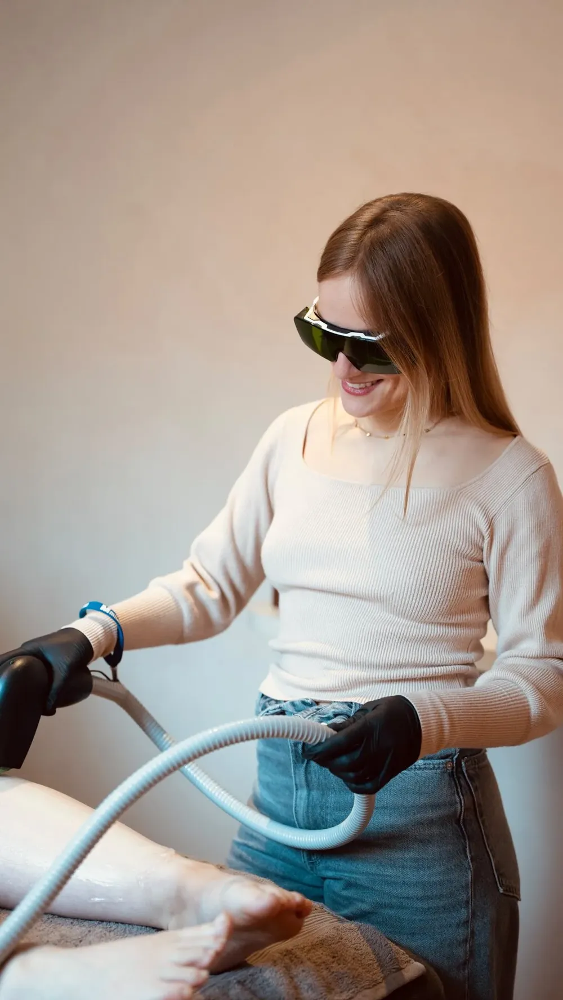
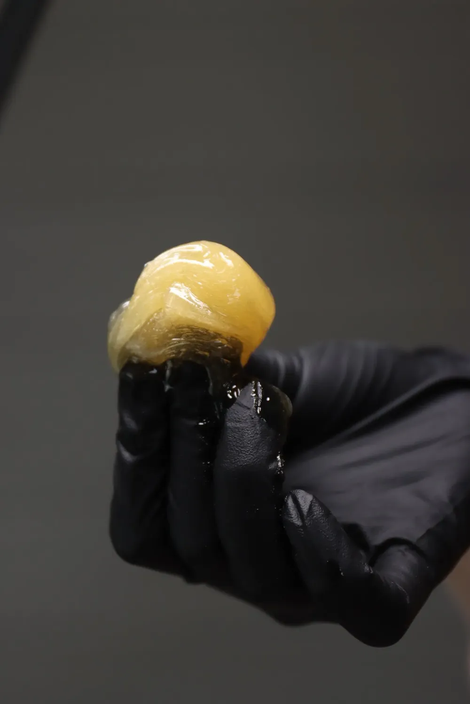
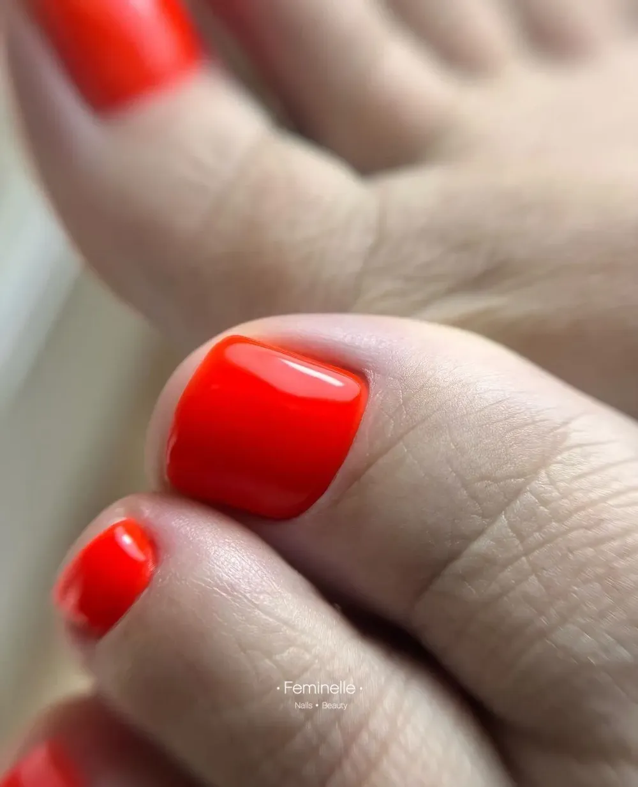

Laserontharing
Permanent, met de Milesman Quattro Wave diodelaser.

Femi is schoonheidsspecialiste en verpleegkundige. Ze richt zich op drie dingen: laserontharing, huidverbetering en mani-pedi. Zo kan ze er echt in uitblinken.

Geen lange lijst behandelingen, wel een paar die Femi door en door kent. Twijfel je? Vraag gerust raad, ook over je verzorging thuis.
Permanent, met de Milesman Quattro Wave diodelaser.

Huidverbeterende trajecten, bijvoorbeeld met een TCA-peeling.

Nagelversteviging op je eigen nagel, zonder verlenging.

Soft, color of full pedi, met een hydraterende voetmassage.


Geen dagelijkse scheerbeurten meer. Geen stoppels na één dag. Geen stress vlak voor een vakantie of een spontaan etentje.
Femi werkt met de Milesman Quattro Wave diodelaser. Naast laser kan je bij haar ook terecht voor suikerontharing.
Je stelt al je vragen en voelt hoe de laser aanvoelt, voor je iets beslist. In de infobrochure vind je ook de tarieven en voordeelpakketten.
Bij elke nagelbehandeling kies je zelf de afwerking, zonder meerprijs voor nail-art. Vaste klanten komen om de paar maanden terug, voor hun handen en hun teentjes.


Nagelversteviging gebeurt op je natuurlijke nagel, met biab, rubberbase of gel.
Medische pedicure doet Feminelle niet.
Mijn passie voor huidzorg begon toen ik twaalf was. Vandaag help ik vrouwen naar een eenvoudige routine die werkt, met behandelingen die veilig zijn en een verschil maken. Regelmatige bijscholing hoort daar gewoon bij.

Klanten op Google en op haar eigen site, uit Kortrijk en omstreken.
"Sinds een aantal maanden ben ik een heel tevreden (nieuwe) en vooral trouwe klant bij Feminelle, en ik ben zó blij dat ik Femi heb leren kennen."
Charlotte GurguGoogle-review"Ik kom ondertussen al jaren bij Feminelle en dat is absoluut niet zonder reden! Ze is niet alleen een ontzettend lieve, getalenteerde en gepassioneerde vrouw..."
Laurie BardareGoogle-review"Ondertussen kwam ik al voor de tweede keer langs, met als doel mijn huid te verbeteren en mijn acnelittekens aan te pakken."
Cynthia 'Cynthia V' VleirickGoogle-review"Ik ga al bijna 2 jaar naar Femi voor mijn nagels en iedere keer kom ik zeer tevreden buiten! Ze is een krak in wat ze doet en is heel sociaal."
Caroline V., KortrijkReview op feminellebyfemi.beJe boekt online, op afspraak. Een cadeaubon voor iemand anders kan ook.

Ik maakte deze demo voor jullie om te tonen wat er kan. Na een kort gesprek maak ik er iets veel persoonlijkers van, helemaal naar jullie wens.
Vrijblijvend. Ik kom langs of we bellen.
Op maat, op jullie eigen domein.
Geen voorschot. Jullie betalen pas als alles klaar is.
Hosting, domeinnaam en kleine wijzigingen, zoals nieuwe openingsuren.
Omdat een voorbeeld meer zegt dan een mail. Zo zien jullie meteen wat er kan, en het kost jullie niets.
Nee. Het gesprek is vrijblijvend. Vinden jullie het niks, dan is het daarmee gedaan.
Na ons gesprek staat jullie site binnen 10 tot 14 dagen online.
Zeker. Jullie domeinnaam kan gewoon blijven, de nieuwe site komt in de plaats van de oude.
Nee, dat doe ik op basis van ons gesprek. Eigen foto's zijn mooi meegenomen, maar niet nodig om te starten.